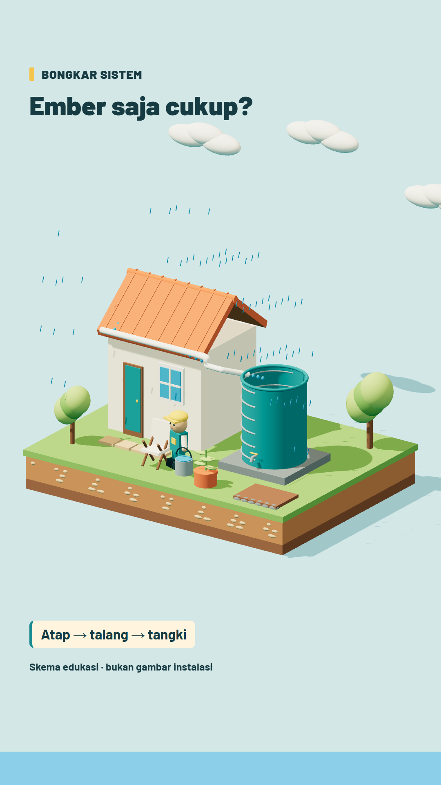
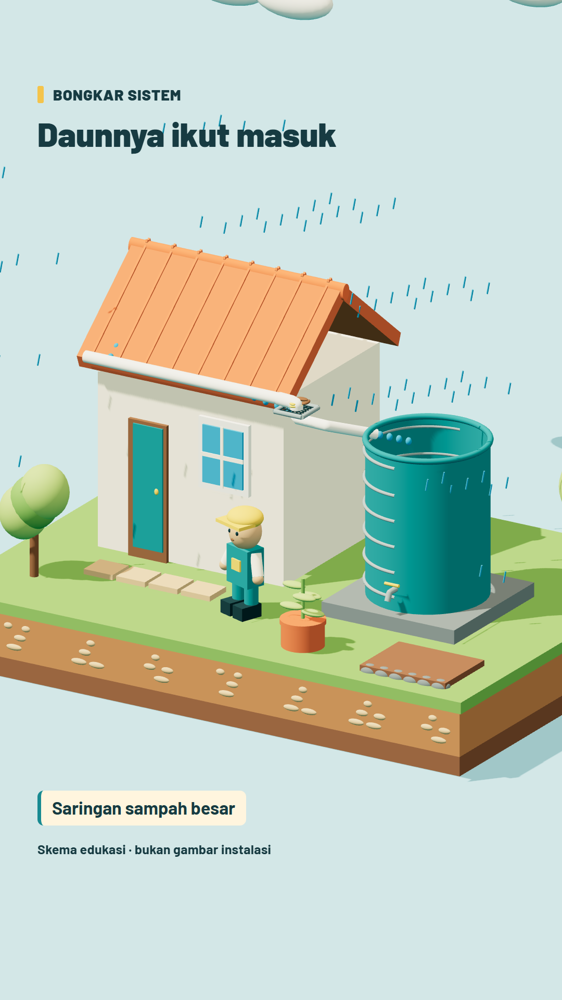
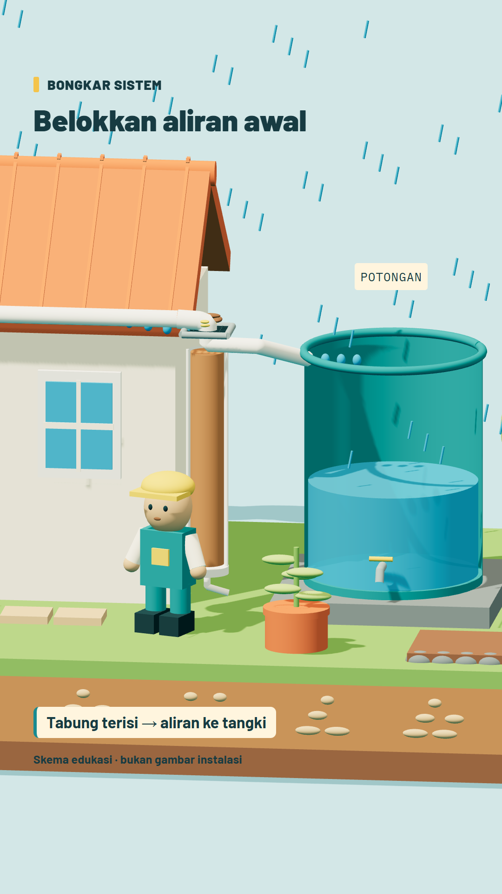
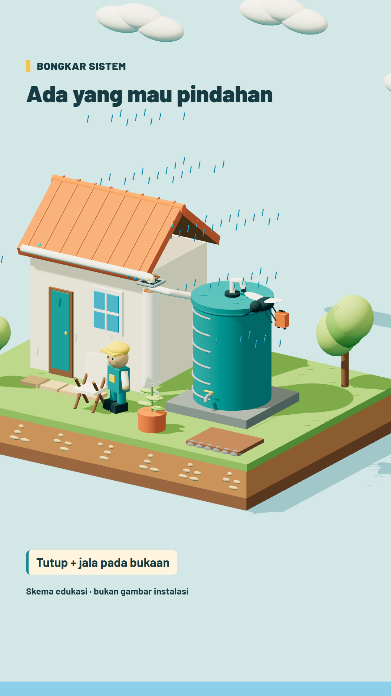
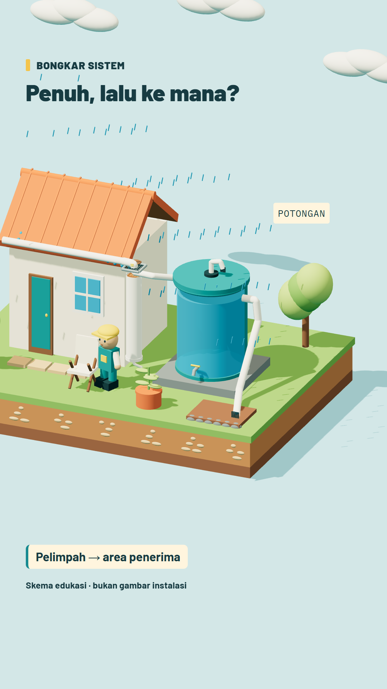
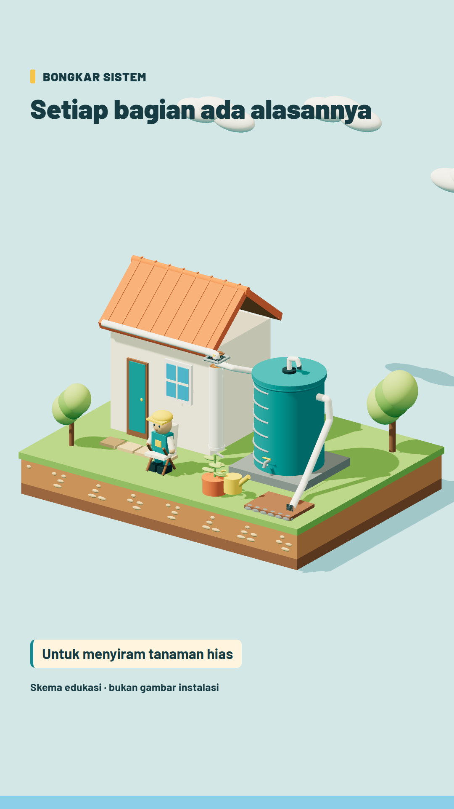

01: Ember saja cukup?
0.0–15.0s · estimate
Establish the goal, the tiny collection area and the roof-fed solution.

02: Daunnya ikut masuk
15.0–29.0s · estimate
Distinguish debris screening from water treatment.

03: Belokkan aliran awal
29.0–48.0s · estimate
Open a sectional view and trace first-flush filling, bypass and reset.

04: Ada yang mau pindahan
48.0–66.0s · estimate
Use a brief theatrical visitor gag to motivate lid and screened openings.

05: Penuh, lalu ke mana?
66.0–79.0s · estimate
Trace excess water away from the house to a receiving planted depression.

06: Setiap bagian ada alasannya
79.0–94.0s · estimate
Resolve the collection chain, maintenance, end use and chair callback.